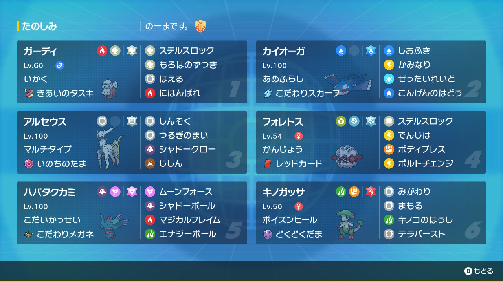

動画
パーティ画像

努力値
ガーディ @ きあいのタスキ
いかく / いじっぱり
135-139(252)-66(4)-×-70-107(252)
カイオーガ @ こだわりスカーフ
あめふらし / おくびょう
176(4)-×-110-202(252)-160-156(252)
アルセウス @ いのちのたま
マルチタイプ / いじっぱり
227(252)-189(252)-141(4)-×-140-140
フォレトス @ レッドカード
がんじょう / のんき
182(252)-110-211(252)-80-81(4)-43
ハバタクカミ @ こだわりメガネ
こだいかっせい / おくびょう
130-×-75-187(252)-156(4)-205(252)
キノガッサ @ どくどくだま
ポイズンヒール / ようき
155(156)-150-113(100)-×-80-134(252)
いかく / いじっぱり
135-139(252)-66(4)-×-70-107(252)
カイオーガ @ こだわりスカーフ
あめふらし / おくびょう
176(4)-×-110-202(252)-160-156(252)
アルセウス @ いのちのたま
マルチタイプ / いじっぱり
227(252)-189(252)-141(4)-×-140-140
フォレトス @ レッドカード
がんじょう / のんき
182(252)-110-211(252)-80-81(4)-43
ハバタクカミ @ こだわりメガネ
こだいかっせい / おくびょう
130-×-75-187(252)-156(4)-205(252)
キノガッサ @ どくどくだま
ポイズンヒール / ようき
155(156)-150-113(100)-×-80-134(252)